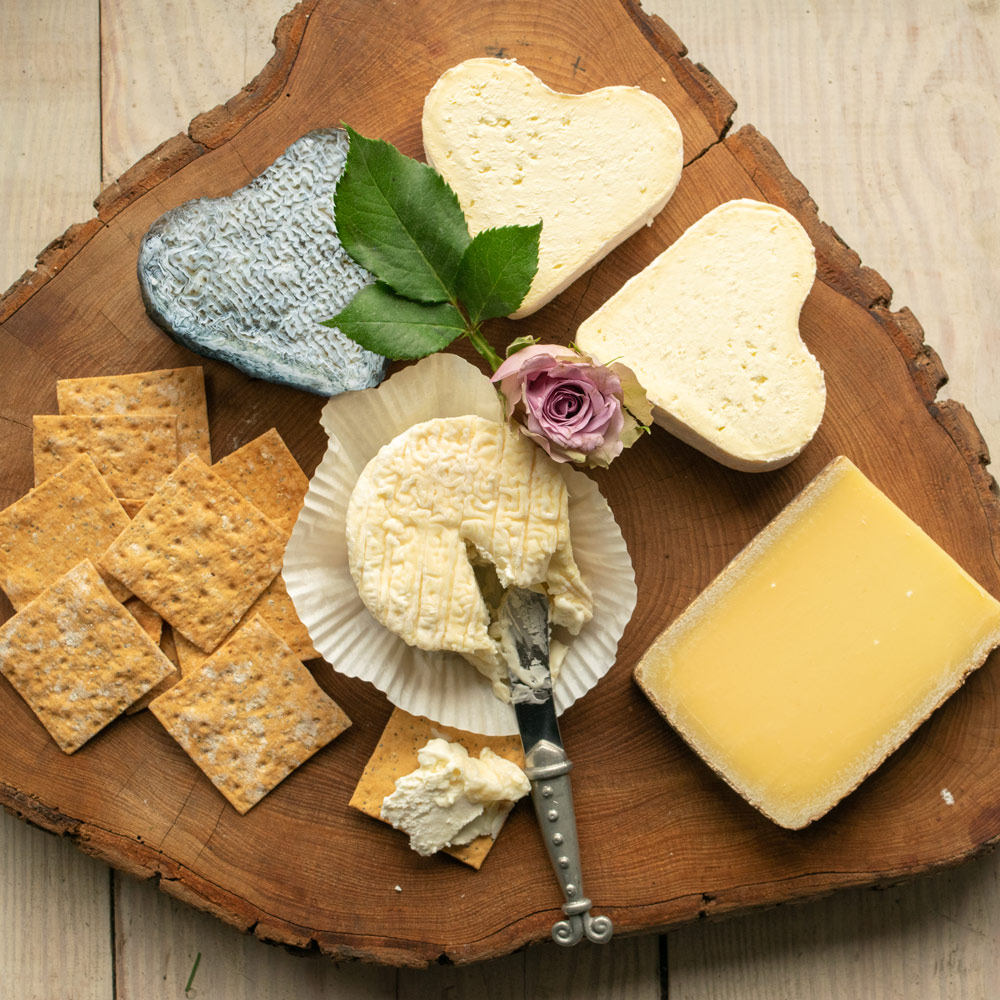
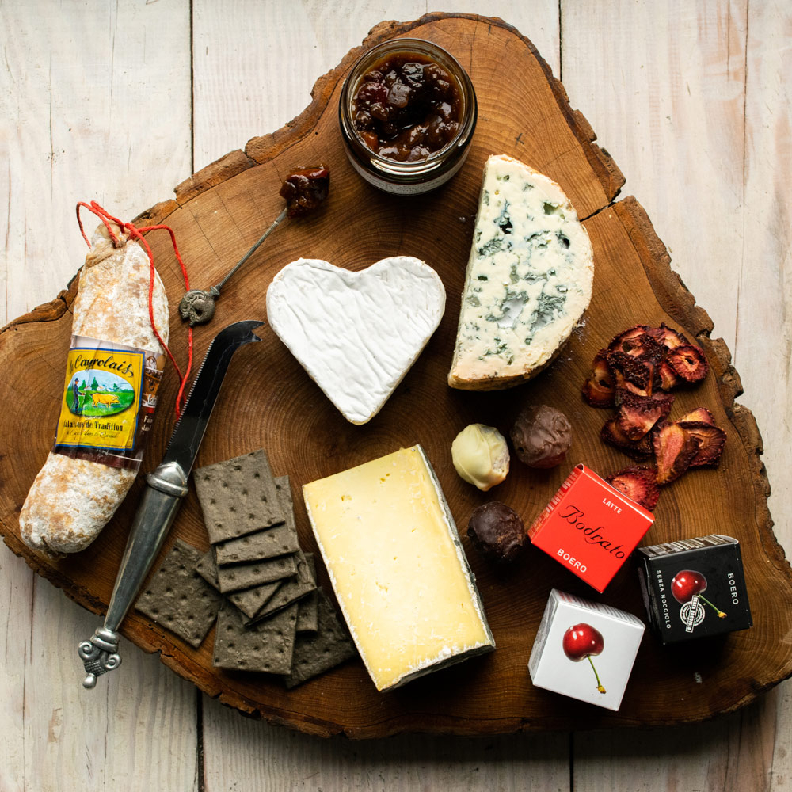

EAT PRAY LOVE CHEESE
The French know a thing or deux about romance. While the custom of sending flowers on St. Valentine’s Day dates back to the late 17th century, the amorous French have a tradition that dates back much further. During the Hundred Years’ War, the French dairymaids of Neufchâtel would mould cheeses into the shape of a heart, and offer them as a token of affection to their English suitors. This was the start of a long tradition in Anglo-French relations, where the French impressed us Brits with their gastronomic skill, while we were busied ourselves annoying the locals with our tendency to get a bit lairy while abroad.
While we are guilty of being head-over-heels in love with cheese the entire year round, it is especially suitable on Valentine’s Day. Because cheese is a lot like love. Firstly, if you have to go without it, you may find yourself crying into a large glass of wine of an evening. And secondly, like any project of passion, making artisan cheese can be difficult. It requires a lot of time, thought and effort, and ever-present is the risk that your endeavours might be for naught. Just like love, you need the ability to pay attention to the little details. But when the milk, the terroir and the cheesemaker’s skill all successfully come together, they can combine to create something truly special. There needs to be a special chemistry, and sometimes, just sometimes, a little luck.
If you have done everything correctly, with enough time and patience something truly magical will develop, and everything will all have been worth it in the end.
To celebrate this Eros-Edam connection, we’ve put together some particularly lovely selections this February. Sharing a romantic supper with your spouse is one of the finest ways to spend an evening, and these beautifully balanced cheeseboards come with their perfect partners. For that extra touch, each selection contains an artisan cheese that has been moulded into the shape of a heart. You may once have thought that your ideal Valentine’s Day partner is tall, dark and handsome. We’re confident these selections will persuade you that you can have a far better time in the company of something strong, rich and mature.
The Fine Cheese Co.



For order, please contact:
📞 03.93.83.2808
✉️ sales@vinacheese.com
📌 Pick up at our store | 347/19 Chu Van An street, Binh Thanh district, Ho Chi Minh City